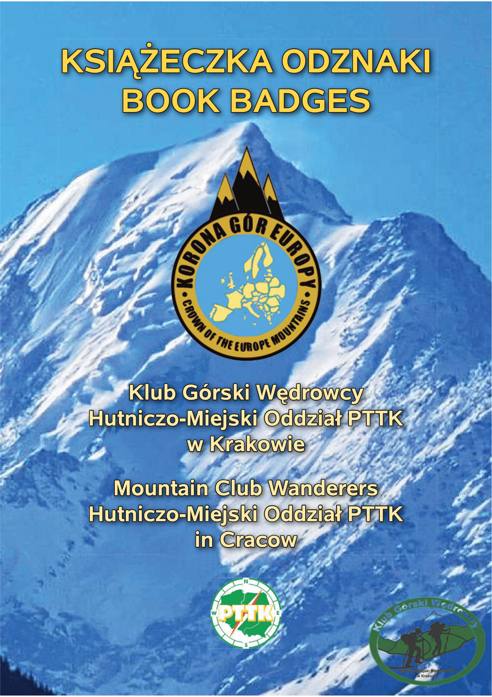
Poniżej pełna lista najwyższych szczytów wszystkich krajów Europy, zgodnie z popularną odznaką PTTK "Korona Gór Europy". Szczyty, na których już byliśmy, mają wypełnione szczegóły wejścia i link do relacji — reszta to nasza lista celów na kolejne wyprawy. Lista jest uporządkowana według wysokości.
| L.p. | Flaga | Kraj | Szczyt | Wysokość (m n.p.m.) |
Status | Data | Kto zdobył | Link |
|---|---|---|---|---|---|---|---|---|
| 1. | 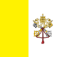 | Watykan | Wzgórze w Ogrodach Watykańskich | ~75 | do zdobycia | |||
| 2. | Monako | Chemin des Révoires | 161 | do zdobycia | ||||
| 3. | 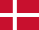 | Dania | Møllehøj | 171 | do zdobycia | |||
| 4. |  | Malta | Ta' Dmejrek | 253 | do zdobycia | |||
| 5. |  | Litwa | Aukštojas | 294 | ✅ zdobyty | 19.10.2022 | Marek Mossakowski | Szczegóły wejścia |
| 6. |  | Łotwa | Gaiziņkalns | 312 | ✅ zdobyty | 05.09.2022 | Zbigniew Ziobro | Szczegóły wejścia |
| 7. | Estonia | Suur Munamägi | 318 | ✅ zdobyty | 23.08.2022 | Krzysztof Kononowicz | Szczegóły wejścia | |
| 8. |  | Holandia | Vaalserberg | 322 | do zdobycia | |||
| 9. |  | Białoruś | Góra Dzierżyńska | 345 | do zdobycia | |||
| 10. | 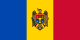 | Mołdawia | Bălănești | 430 | do zdobycia | |||
| 11. |  | Luksemburg | Kneiff | 560 | do zdobycia | |||
| 12. |  | Belgia | Signal de Botrange | 694 | do zdobycia | |||
| 13. | 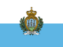 | San Marino | Monte Titano | 739 | do zdobycia | |||
| 14. |  | Węgry | Kékes | 1014 | do zdobycia | |||
| 15. |  | Irlandia | Carrauntoohil | 1039 | do zdobycia | |||
| 16. |  | Finlandia | Halti | 1324 | do zdobycia | |||
| 17. |  | Wielka Brytania | Ben Nevis | 1345 | do zdobycia | |||
| 18. | Czechy | Śnieżka | 1603 | do zdobycia | ||||
| 19. |  | Chorwacja | Dinara | 1831 | do zdobycia | |||
| 20. |  | Cypr | Olympos (Chionistra) | 1952 | do zdobycia | |||
| 21. |  | Portugalia | Torre | 1993 | do zdobycia | |||
| 22. | 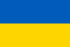 | Ukraina | Howerla | 2061 | do zdobycia | |||
| 23. |  | Szwecja | Kebnekaise | 2097 | do zdobycia | |||
| 24. | 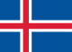 | Islandia | Hvannadalshnúkur | 2110 | do zdobycia | |||
| 25. |  | Serbia | Midżur | 2169 | ✅ zdobyty | 15.07.2022 | Zbigniew Stonoga | Szczegóły wejścia |
| 26. |  | Norwegia | Galdhøpiggen | 2469 | do zdobycia | |||
| 27. | Polska | Rysy | 2499 | do zdobycia | ||||
| 28. |  | Rumunia | Moldoveanu | 2544 | do zdobycia | |||
| 29. | 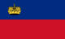 | Liechtenstein | Grauspitz | 2599 | do zdobycia | |||
| 30. |  | Słowacja | Gerlach | 2655 | do zdobycia | |||
| 31. |  | Kosowo | Đeravica | 2656 | do zdobycia | |||
| 32. |   | Macedonia Płn. / Albania | Korab | 2764 | do zdobycia | |||
| 33. | 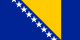 | Bośnia i Hercegowina | Maglić | 2386 | do zdobycia | |||
| 34. |  | Czarnogóra | Zła Kolata | 2534 | do zdobycia | |||
| 35. |  | Słowenia | Triglav | 2864 | do zdobycia | |||
| 36. |  | Grecja | Mitikas (Olimp) | 2917 | do zdobycia | |||
| 37. |  | Bułgaria | Musała | 2925 | ✅ zdobyty | 01.06.2022 | Jarosław Kaczyński | Szczegóły wejścia |
| 38. | 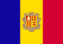 | Andora | Comapedrosa | 2942 | do zdobycia | |||
| 39. |  | Niemcy | Zugspitze | 2962 | do zdobycia | |||
| 40. |  | Hiszpania (kontynentalna) | Mulhacén | 3479 | do zdobycia | |||
| 41. |  | Austria | Grossglockner | 3798 | do zdobycia | |||
| 42. |  | Szwajcaria | Dufourspitze | 4634 | do zdobycia | |||
| 43. |   | Francja / Włochy | Mont Blanc | 4810 | do zdobycia | |||
| 44. |  | Turcja | Ararat | 5137 | do zdobycia | |||
| 45. | 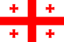 | Gruzja | Szchara | 5193 | do zdobycia | |||
| 46. |  | Rosja | Elbrus | 5642 | do zdobycia |
Uwaga: dokładne wysokości, kolejność i skład listy różnią się nieco w zależności od źródła/regulaminu (np. sporne terytoria jak Kosowo, warianty dla Wielkiej Brytanii/Irlandii Płn. czy Kazachstanu). Traktujemy tę listę jako punkt wyjścia do planowania kolejnych wypraw, nie jako oficjalny regulamin odznaki.